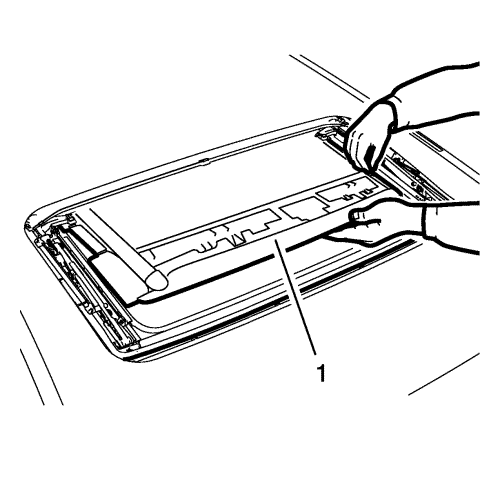
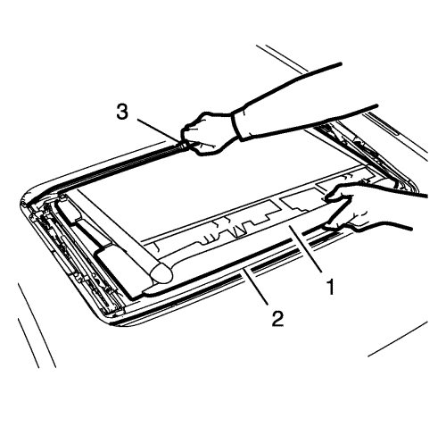
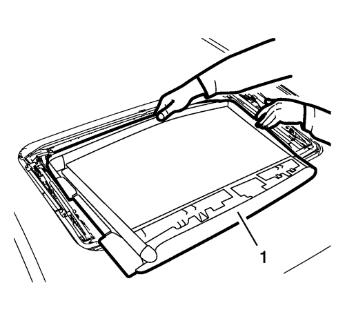

Orlando
Sustitución del parasol del techo corredizo
Procedimiento de desmontaje
Desmonte la ventanilla del techo corredizo. Consultar
Sustitución de la ventanilla del techo corredizo
.

Doble el parasol del techo corredizo (1) delantero central hacia arriba y saque la pieza corredera del carril guía por un lateral.

Doble el parasol del techo corredizo (1) por encima del deflector de aire (2) y tenga cuidado con el amortiguador (3) de la canaleta.

Doble el parasol del techo corredizo (1) trasero central hacia arriba y saque la pieza corredera del carril guía por un lateral.
Retirar el parasol del techo corredizo.
Procedimiento de montaje
Monte el parasol del techo corredizo, tenga cuidado al meter la pieza corredera en el carril guía.
Doble el parasol del techo corredizo trasero central hacia abajo y meta la pieza corredera en el carril guía por un lateral.
Doble el parasol del techo corredizo por encima del deflector de aire y tenga cuidado con el amortiguador de la canaleta.
Doble el parasol del techo corredizo delantero central hacia abajo y meta la pieza corredera en el carril guía por un lateral.
Monte la ventanilla del techo corredizo. Consultar
Sustitución de la ventanilla del techo corredizo
.
© Copyright Chevrolet. All rights reserved